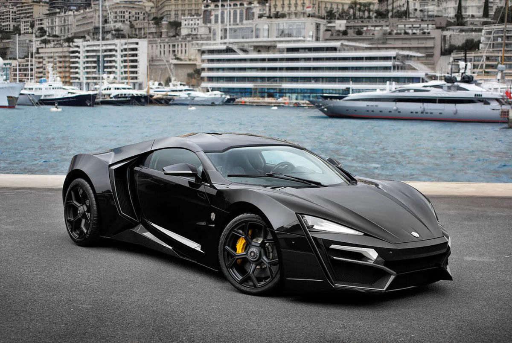

Car information

Lykan Hypersport
The Lykan Hypersport is a Lebanese limited production sports car manufactured by W Motors, a United Arab Emirates based company, founded in 2012 in Lebanon with the collaboration of Lebanese and Italian engineers.[4] It is the first sports car to be designed and produced indigenously in the Middle East.The production of the car was limited to a total of seven units. The first pre-production Lykan HyperSport was unveiled to the public at the Qatar Motor Show in February 2013.MERCEDES AMG GT 63 S
The AMG GT 4-Door Coupé uses a front-engine layout with 4MATIC+ fully variable all-wheel-drive (rear-biased), and is available with either a 3.0 L M256 turbo/supercharged inline-six engine or a 4.0 L M177 twin-turbocharged V8 engine. The inline-six engine features a conventional turbocharger as well as a mild hybrid system that Mercedes-Benz calls "EQ Boost", which uses an electrically driven supercharger and a 48 volt electric motor that when combined, produce an extra 21 hp (16 kW) and 184 lb⋅ft (249 N⋅m) of torque in addition to the petrol engine when it is not powering the electrical system. This system traces its roots back to the Mercedes CLS53.[9][10] The car utilises the rear anti-roll bar to increase chassis stiffness, as well as active aero, including an electronically adjustable rear spoiler and electronically operated front louvers in the front grille, that can open and close to manage airflow through the radiator from the AMG GT R flagship sports car.